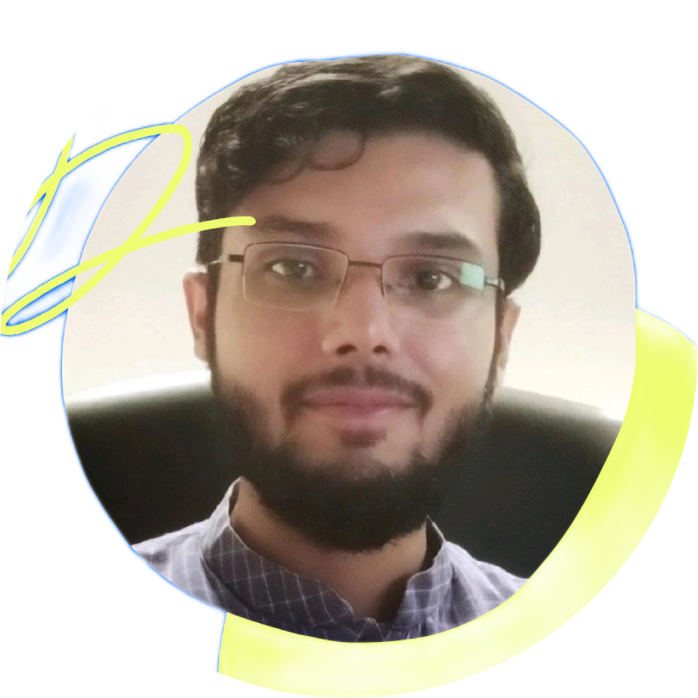

About Evon Shahriar

TL;DR
Hello! I'm Evon Shahriar, a Computer Engineer and AI Researcher currently pursuing a Master of Computing (Research) at Universiti Multimedia (MMU), Malaysia. With a Bachelor of Engineering in Computer Science from Southwest Forestry University, China, I have a strong foundation in coding and algorithms. My research focuses on quantum machine learning, medical image analysis, and Explainable AI. I have also developed AI systems for water quality monitoring, optimized development aid allocation frameworks, and designed a navigation app for the visually impaired. Proficient in various programming languages and data science tools, I am passionate about innovative solutions for sustainability.
| Current |
|---|
| Master of Computing (Research) Universiti Multimedia (MMU), Malaysia (2024-Present) Engaged in active research. |
| Past |
| B.Eng. in Computer Science and Technology Southwest Forestry University (SWFU), China (2018-2022) Achieved an overall score of 91.50%. |
| Higher Secondary Certificate in Science Gazipur Cantonment College, Bangladesh (2014-2016) Achieved a GPA of 5.00 out of 5.00. |
| Secondary School Certificate in Science Gazipur Cant. Board High School, Bangladesh (2004-2014) Achieved a GPA of 5.00 out of 5.00. |
| MMU High Achievers Research Scholarship (2024) Awarded by Prof. Dr. Tee Connie, Dean of MMU, Malaysia |
| SWFU Dean’s Award Nomination (2021) Category: Outstanding bachelor thesis, Nominated by Mr. Wang Xiaolin, SWFU, China |
| Full-ride Scholarship for Bachelor Studies (2018-2022) Awarded by Prof. Dr. Xu Hui, Vice-president of SWFU, China |
| Sena Kalyan Educational Grant (2014-2016) Category: Achieving A+ in all subjects on public board exams, Awarded by Sena Kalyan Sangstha, Bangladesh |
| Research Student Mahdy's Research Academy, Bangladesh (12/23 – 12/24) Researched quantum machine learning, analyzed medical images, worked on Explainable AI. |
| Engineering Student Intern Huaxin Zhiyuan EdTech Co. Ltd., China (09/21 – 10/21) Conducted security audits and risk assessments, collaborated with WISEZONE under Mr. Xinglin Gong’s mentorship. |
| Water Quality Monitoring Built an AI-based system for monitoring water quality. |
| Optimizing Development Aid Allocation Developed a data-driven framework using unsupervised machine learning and multidimensional indices. |
| Visually Impaired Navigation App Designed an application to assist visually impaired individuals in navigation. |
| Programming Languages Python, R, Javascript, Scala, C++, SQL, HTML, CSS |
| Big Data & ML Spark, Hadoop, MongoDB, TensorFlow, Keras, PyTorch |
| Data Science A/B testing, ETL, hypothesis testing, data visualization, statistical analysis |
| English: Fluent |
| Bengali: Native |
If you'd like to collaborate or learn more about my work, feel free to contact me.
Thank you for visiting my page.